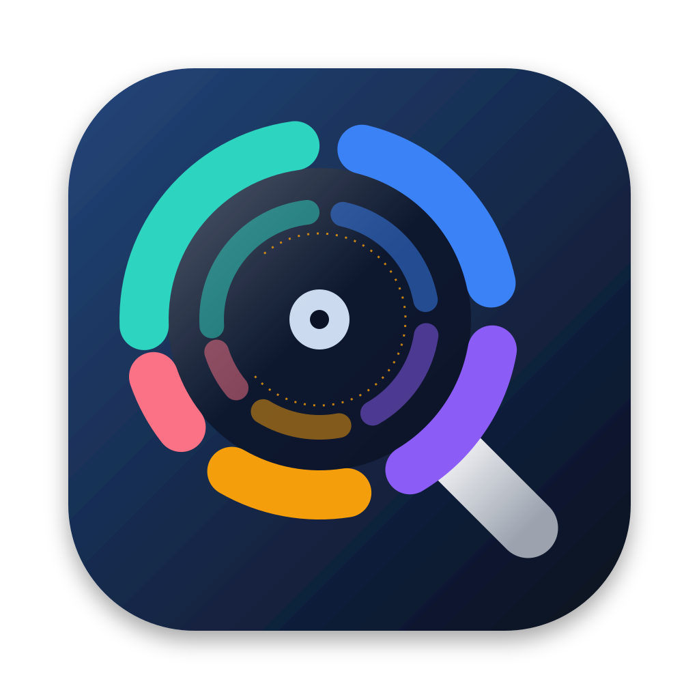

MacDiskSleuth
The disk analyzer that tells you the truth on APFS. It reports what is really on disk, and what deleting something will really free.
Why another disk analyzer?
Popular disk-usage tools were designed for a filesystem Apple stopped shipping years ago. On modern macOS, copy-on-write clones get double-counted, hard links inflate totals, sparse and compressed files report sizes they don't occupy, and Time Machine local snapshots quietly hold on to space you thought you freed. The numbers don't match Finder, and deletions don't give you your disk back.
Three honest size lenses
Logical
What the files claim to be. What most tools show.
Physical
What the disk actually holds. Clones, hard links, sparse ranges and compression are counted once.
Freeable
What deleting this would give back right now.
What's in the box
- Top 5 things to delete: every scan ends with a ranked, explained list of what to delete first — regenerable caches, build artifacts, old downloads, container images, duplicates — by what deleting really frees, with a notification when the scan finishes.
- MacDiskSleuth.app: a native SwiftUI app with an interactive sunburst, a size-lens toggle, and delete-to-Trash that shows true freeable bytes.
- macdisksleuth: a fast CLI with
scan,top,recommend,info,overviewandsnapshots. - Finder Quick Action: Analyze with MacDiskSleuth on any folder or volume.
- MacDiskSleuthKit: the shared engine, usable as a Swift package.
It is built on getattrlistbulk with APFS extended attributes, the fast path, with per-file clone, sparse and dataless awareness. It opens no files, so iCloud placeholders are never downloaded.
Quick tour
macdisksleuth info ~/Movies/render.mov # 3 sizes, clone family, "deleting frees X"
macdisksleuth scan ~ --top 15 # biggest items, honest sizes
macdisksleuth overview # capacity, purgeable space, snapshots
macdisksleuth snapshots # what Time Machine is still holding
macdisksleuth top ~ --only clone --sort freeable,logicalGrant your terminal Full Disk Access for complete results. MacDiskSleuth records every folder it couldn't read and says so, rather than silently under-counting.
Install
Requires macOS 13 (Ventura) or later, on Apple Silicon or Intel. Download the app zip or the command-line tarball from the latest release, or build from source:
git clone https://github.com/denmanjohn-maker/macdisksleuth.git
cd macdisksleuth
swift build -c release
.build/release/macdisksleuth --helpRelease builds are signed with a Developer ID certificate and notarized by Apple, so the app opens without a Gatekeeper warning. If a release is marked as not notarized, open System Settings → Privacy & Security and click Open Anyway, or clear the quarantine flag from Terminal: xattr -dr com.apple.quarantine MacDiskSleuth.app.